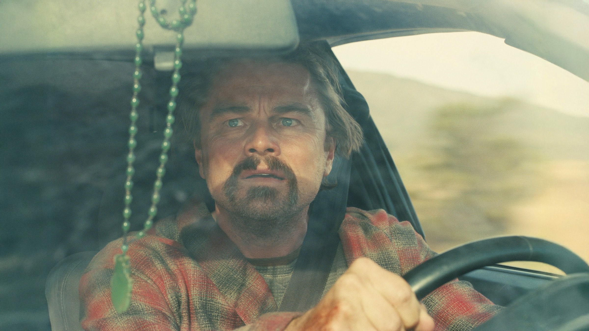
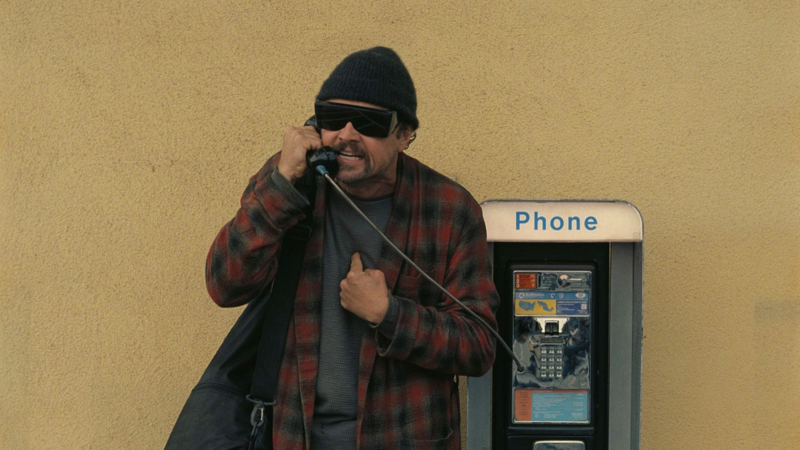

One Battle After Another
Paul Thomas Anderson porta Pynchon nell'America di oggi: un film d'azione politico, buffo e feroce, con un DiCaprio stanco e magnifico
Ci sono registi che a ogni film cambiano pelle, e Paul Thomas Anderson è uno di questi. Dopo la malinconia anni Settanta di Licorice Pizza, l'autore di Magnolia e Il petroliere torna con il suo progetto più grande e più rumoroso: un film d'azione politico, tratto liberamente da Vineland di Thomas Pynchon, che sembra un inseguimento lungo due ore e mezza e nasconde dentro una storia di padri, figlie e ideali andati a male. One Battle After Another, uscito in Italia come Una battaglia dopo l'altra, è arrivato nelle sale il 25 settembre 2025 con Warner Bros.
La critica internazionale lo ha accolto con un entusiasmo raro: 95 su 100 su Metacritic e il 94% di recensioni positive su Rotten Tomatoes. In Italia il giudizio è più articolato, e vale la pena capire perché.
Di cosa parla One Battle After Another?
Leonardo DiCaprio è Bob Ferguson, un tempo rivoluzionario con il nome di battaglia di Ghetto Pat, oggi un uomo stanco e un po' paranoico che vive nascosto con la figlia adolescente Willa, interpretata dall'esordiente Chase Infiniti. Il passato torna a bussare quando riemerge il colonnello Steven J. Lockjaw, un militare corrotto con il volto di Sean Penn, deciso dopo sedici anni a cancellare ogni traccia di ciò che è successo tra lui e il gruppo di Bob.
Da lì parte una fuga che attraversa la California e il confine con il Messico, con Benicio del Toro nei panni di un insegnante di karate dai mille contatti, Teyana Taylor in quelli della rivoluzionaria Perfidia Beverly Hills e Regina Hall in un ruolo più piccolo ma prezioso. Senza svelare altro: il film tiene insieme commedia, thriller e dramma familiare senza mai fermarsi a lungo su un solo registro.

Da Vineland di Pynchon all'America di oggi
Anderson aveva già portato al cinema Thomas Pynchon con Vizio di forma nel 2014, e torna allo scrittore partendo da Vineland, romanzo del 1990 sugli strascichi della controcultura nell'America reaganiana. Più che un adattamento, però, è una libera ispirazione: la storia viene spostata nel presente e si confronta con temi molto attuali, dai centri di detenzione per migranti al fanatismo di certi gruppi di potere.
Il risultato è un film apertamente politico che non diventa mai un comizio, perché Anderson sceglie quasi sempre l'ironia: i rivoluzionari sono smemorati e litigiosi, i cattivi sono ridicoli prima ancora che spaventosi, e l'azione nasce spesso da un equivoco. È un modo di raccontare il presente che ricorda il Pynchon migliore, capace di far ridere e inquietare nella stessa pagina.
DiCaprio, Penn e del Toro: come sono le interpretazioni?
DiCaprio lavora su un personaggio che non ha nulla dell'eroe: goffo, smemorato, sempre in ritardo di un passo, eppure capace di una tenerezza disarmante quando c'è di mezzo la figlia. È una prova costruita per sottrazione, che cresce scena dopo scena e trova il suo momento migliore proprio nel finale.
Sean Penn, invece, va nella direzione opposta: il suo Lockjaw è rigido, grottesco, quasi una caricatura del potere militare. Per alcuni è la cosa migliore del film, per altri un eccesso; Davide Turrini sul Fatto Quotidiano parla di una recitazione al limite del comico. A noi convince proprio perché disturba. E poi c'è Benicio del Toro, che ruba ogni scena in cui compare con una calma quasi zen, mentre Chase Infiniti regge senza timori il confronto con tre premi Oscar.
Com'è girato? La VistaVision e l'azione
Anderson e il direttore della fotografia Michael Bauman hanno girato gran parte del film in pellicola 35 mm con il formato VistaVision, che fa scorrere la pellicola in orizzontale e restituisce immagini larghissime e piene di dettaglio. Si vede: i deserti, le strade e le auto hanno una consistenza materica che il digitale fatica a imitare.
Il film ha il passo di un grande action, con un inseguimento finale tra le colline che è già tra le sequenze più discusse dell'anno. La colonna sonora di Jonny Greenwood, storico collaboratore di Anderson, lavora sul ritmo più che sulla melodia, con percussioni e archi nervosi che tengono alta la tensione anche nei momenti più buffi.
Un inseguimento lungo due ore e mezza, con dentro una storia di padri e figlie.

Cosa non funziona
La durata si sente: 162 minuti sono tanti, e dopo la prima ora, la più travolgente, il racconto rallenta e si disperde in qualche deviazione di troppo. È anche la critica principale della stampa italiana più severa, che rimprovera al film una seconda metà meno compatta e una visione del conflitto a tratti troppo netta, con i buoni da una parte e i cattivi dall'altra.
Anche Antonio Cuomo su Movieplayer, che lo promuove con convinzione, avverte che il film chiede allo spettatore una certa dedizione. Noi siamo d'accordo: One Battle After Another non è un'opera perfetta, ma è uno di quei film in cui anche gli eccessi sono il segno di un autore che rischia.
A chi lo consigliamo?
A chi ama il cinema d'autore che non ha paura dello spettacolo, a chi ha apprezzato Vizio di forma e Licorice Pizza, e a chi cerca un DiCaprio diverso dal solito. Chi preferisce racconti compatti e lineari potrebbe trovarlo dispersivo: in quel caso conviene vederlo in due serate, perché la prima ora da sola vale il biglietto.
Dove vedere One Battle After Another?
Dopo l'uscita in sala, il film è arrivato in abbonamento su HBO Max ed è disponibile a noleggio sulle principali piattaforme digitali, tra cui Apple TV, Rakuten TV, Timvision e CHILI. Aggiornamento di marzo 2026: alla 98ª edizione degli Oscar ha vinto sei statuette, tra cui miglior film, regia e attore non protagonista per Sean Penn.
Se da un lato la seconda metà perde un po' di compattezza e la durata mette alla prova, dall'altro Paul Thomas Anderson firma il suo film più spettacolare, con un DiCaprio malinconico e un cast in stato di grazia. Cinema politico che diverte e fa pensare: per noi uno dei titoli imprescindibili del 2025.
Domande frequenti
Di cosa parla One Battle After Another?
Di un ex rivoluzionario, interpretato da Leonardo DiCaprio, costretto a tornare in azione quando un ufficiale corrotto del suo passato, il colonnello Lockjaw di Sean Penn, ricompare dopo sedici anni e minaccia sua figlia.
Quanto dura One Battle After Another?
162 minuti, cioè due ore e quarantadue minuti.
Dove vedere One Battle After Another in streaming?
In Italia è disponibile in abbonamento su HBO Max e a noleggio sulle principali piattaforme digitali, tra cui Apple TV, Rakuten TV, Timvision e CHILI.